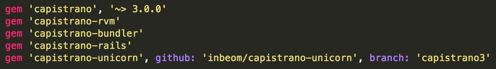
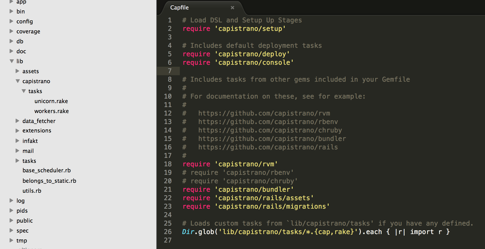
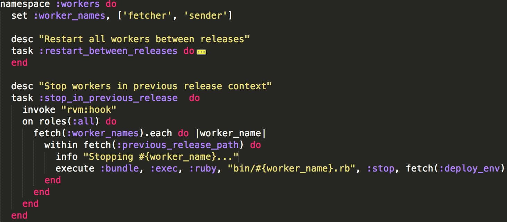

the first major release of Capistrano in almost 5 years
significant changes might make a lot of sites offline, and make a lot of people very...unhappy
Design goals
- Get away from custom DSL solution
- Better modularisation to make it more useful for non-rails apps (assets, db migrations)
- Better modularisation to make it more useful for non-rails apps (assets, db migrations)
- Easier Debugging (PTY, TTY, login shels, non-login shells, rvm rbenv)
- Speed (better support for parallelism, rolling restarts)
- Applicability (integration with chef, puupet)
better modularization & Rake tasks and DSL

better modularization & Rake integration

bundle exec capify .
bundle exec cap install
Built-In Stage Support
bundle exec cap install STAGES=staging,production
Better magic variables support
set(:bundle_cmd) { File.join(bundle_dir, 'bin/bundle') }
set :bundle_cmd, -> { File.join(fetch(:bundle_dir), 'bin/bundle') }
set :application, 'massmailer'
fetch :mieso_type, 'kiełbasa'
auto magic stuff
fetch(:default_env).merge!(rails_env: :production)
set :linked_files, %w{config/database.yml}
set :linked_dirs, %w{pids log public/system}
SSHKit
helpers, command mapping, logging etc
